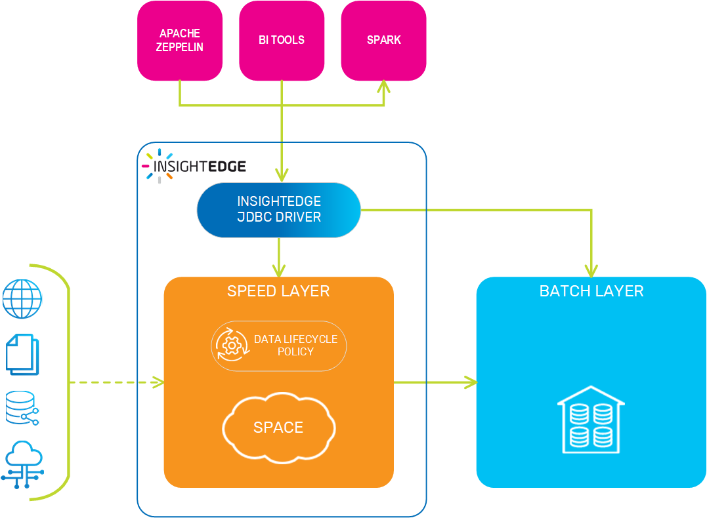
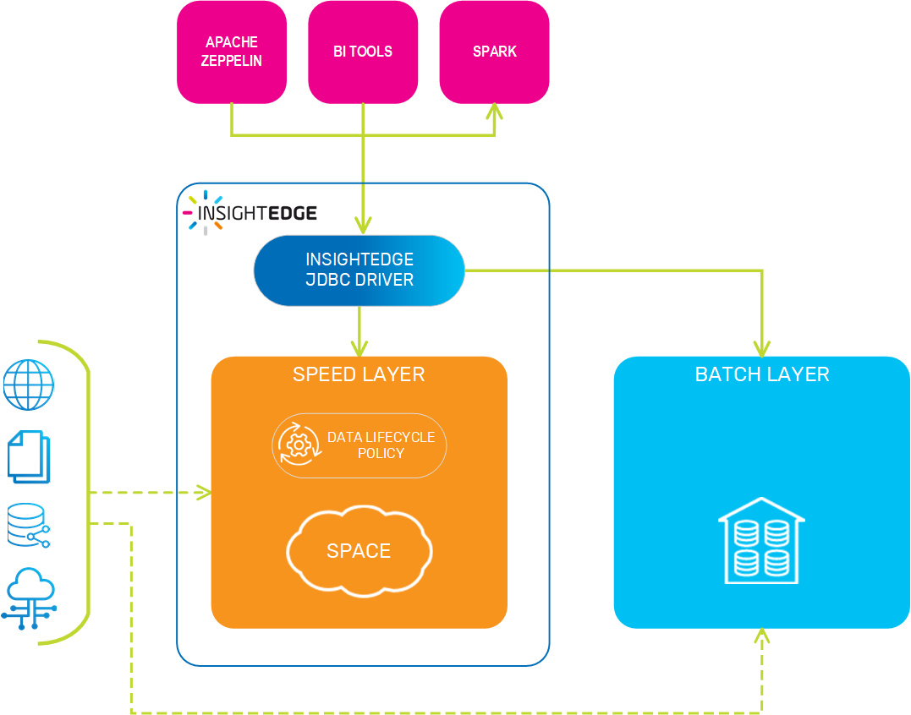

Big data adoption in enterprises is increasing all the time, with no sign of stopping. The Apache Spark MLlib and Tensorflow are among the most-adopted big data analytics platforms, while Cloudera, Amazon EMR, Hortonworks, and MapR are popular big data distributions. Patching all these technologies together into the classic Lambda architecture presents a number of customer challenges.
AnalyticsXtreme operationalizes your data lake for real-time analytics. Your data is available for immediate searching, queries, and running analytics; there is a single logical view for hot, warm and cold data. The hot data resides on the XAP data grid, while cold (historical) data can be stored on any big-data platform such as HDFS or Amazon S3. Additionally, the hot data is mutable, supporting real-time updates. The data becomes immutable when it is stored on the external big data platform.
This approach enables fast access to frequently used historical data, and applications can access any data - hot, warm, or cold - via a unified layer using Spark MLlib for analytics and Spark SQL for queries. AnalyticsXtreme provides automatic life cycle management, handling the underlying data movement, optimization and deletion using an internal data life cycle policy.
AnalyticsXtreme was designed to ???
You can use AnalyticsXtreme in the following architectures.


Storage/FS: HDFS/S3 (for batch layer)
Format: Avro/Parquet (columnar) (Alon)
Date & Time: last N h
Partition: by hour
Primary: by ID (this is the key)
Size: up to NNNGB
Deletion: Every N hours
Spark
SQL
JDBC (for BI tools like Tableau)
Gaps: Join (Ayelet)